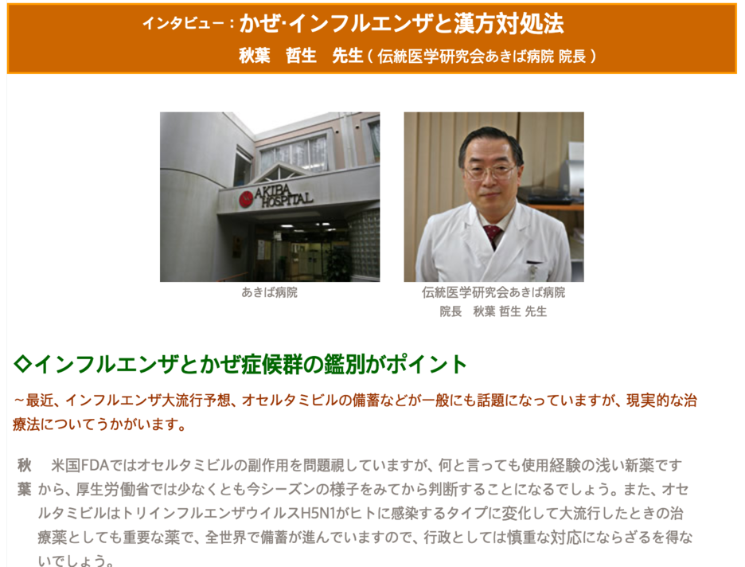
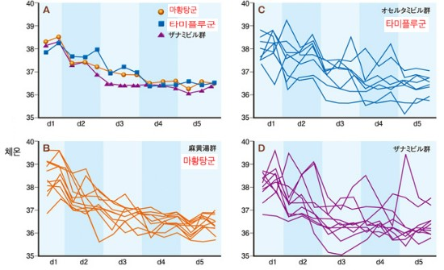
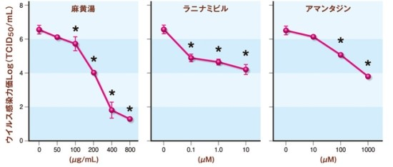
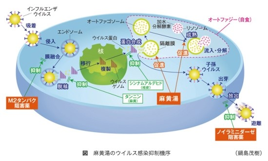

이 페이지에서 살펴볼 내용
호흡기 감염병의 치료에 대해
'코로나19, 인플루엔자' 한약으로 가능한가요? 라는 질문은 올해도 어김없이 이어집니다.
'독감, 인플루엔자' 한약으로 가능한가요? 라는 질문은 올해도 어김없이 이어집니다.
국내 뿐 아니라 해외에서도 독감(인플루엔자)치료에 한약을 사용합니다.
그것도 아주 많이. (소아, 고령자에게 더 많이 사용합니다.)
객관적으로 인플루엔자 바이러스를 직접 공격하기도 하고, 국소면역활동을 활성화시켜 발열 등과 같은 증상의 이환기간을 줄여줍니다. 타미플루에 비해서도 개선의 효과가 크죠.
I 독감이란?
독감 바이러스의 감염은 일반적으로 1-2주 동안 지속됩니다.
가끔 노인과 유아와 같은 고위험군에서 이차 감염이나 다른 합병증으로 이어집니다. 때때로 이러한 합병증으로의 이환은 심각한 질병이나 사망까지 일으킬 수 있습니다.
독감 바이러스는 사람들이 함께 일하거나 함께 사는 공동체(학교, 유치원, 어린이집, 노인복지관 등)와 지역에서 빠르게 퍼져 유행병으로 이어질 수 있습니다. 학교, 노인복지관, 그리고 직장에서 특히 발병 위험이 높습니다. 가끔 독성이 특히 높은 형태의 인플루엔자가 전세계 사람들에게 영향을 미쳐서 세계적 유행병이 됩니다. 2009년에서 2010년 독감철에 H1N1 바이러스가 세계적 유행병이 되었습니다.
독감을 예방하는 효과적인 방법은 연례적인 독감 예방주사를 통한 광범위한 백신 접종과 건강이 떨어진 사람의 체질별 한약의 예방적 복용이 추천됩니다.
I 독감, 한약으로 치료가 가능한가요
가능합니다.
독감은 한약의 선제적 복용으로 치료기간을 단축시킵니다.
한약은 발열 및 증상의 지속기간을 초기부터 상당부분 줄여주기 때문에 1세 이하의 아이들도, 고령자의 경우에도 안심하고 복용할 수 있습니다.
사용되는 처방은 마황탕, 마황부자세신탕, 마행감석탕, 패독산 등이 예입니다.
해외에서 발간된 논문을 보면 독감에 대한 한약의 치료 효과에 대해 긍정적으로 평가하고 있습니다.
한약으로 독감과 같은 질병에 대해 효과를 기대할 수있을까
마황탕의 소아 인플루엔자 A 감염에 대한 효과를 검토
대상은 38 ℃ 이상의 발열을 포함 인플루엔자 증상을 나타내는 생후 5개월부터 13 세까지 49 증례 (남 :여 = 24:25, Oseltamivir 투여 n = 18, 마황 탕 ・ 오셀타미비르 병용 군 n = 14 , 마황 탕 투여군 n = 17)이다.
방법은 1 세 이상의 신속 진단 키트는 양성이었다 증례를 무작위로 나누어 (1) 타미플루 투여군 (4mg/kg / 일분 2), (2) 마황탕 ・ 타미플루병용 군 (마황 탕 (TJ - 27); 0.18/kg / 일3회)했고. 타미 플루의 적응이되지 않는 1 세 미만의 환자 및 신속진단키트결과 네거티브였는 환자군은, (3) 마황탕 단독투여군으로 진행했다. 게다가, 보호자에게는 복약 상황과 체온 측정 기록을 요청하고 각 군간에 치료 시작부터 해열 (37.2 ℃ 이하)까지의 시간을 비교했다. 투여 시작시 평균 연령, 남녀 비율, 치료 개시까지의 발열기간, 발열 정도, 예방 접종 유무 등의 배경 요인 각 군간에 차이는 보이지 않았다.
결과는 3 군간에 치료 시작부터 해열 시간을 살펴보면, 타미플루 복용 군에서는 평균 31.9 시간, 마황탕 ・ 타미플루 병용 군에서는 평균 21.9 시간, 마황탕 단독 군에서는 17.7 시간이며, 마황탕의 해열 효과가 뛰어났다. 각 군 모두 부작용의 발생은 없었다. 마황탕 단독군과 병용군에서 뛰어난 결과를 얻은 것으로부터, 향후 대규모 이중맹검무작위대조시험을 실시하고, 인플루엔자 감염증에 대한 치료 전략으로 마황탕의 중요성을 충분히 검토하는 필요가있다고 본다.

우리 나라의 이원적 의료제도로 인해 잘 알려지지 않은 사실들이 있습니다.
한의학(정확하게는 동양의학)을 제도적을 인정하는 나라중 선도국가는 사실상 한국, 일본, 중국이 있습니다.
중국은 종주국을 자처하고있고, 우리나라는 한의사라는 제도가 국가적으로 규정되어 있으며, 일본은 한방의학이 의사제도 내에서 전문의제도(일종의)로 자리잡아 국가보험에 들어가있는 현실을 우선 알려드리고 싶구요.
심지어 일본은 한의사제도가 없음에도 불구하고 의사가 사용하는 보험 한약의 가지수가 우리보다 100여종 이상으로 훨씬 더 많은 안타까운 현실도 있죠.
각설하고 타미플루에 필적하는, 아니 그이상의 한약 "마황탕"에 대해서 소개하고자 합니다.
객관적 근거를 함께 첨부했습니다.
첫번째 논문은 인플루엔자에 대한 한약(항바이러스약과 마황탕의 랜덤화비교시험 검토)
두번째 논문은 인플루엔자치료에 대한 마황탕의 유용성(새로운 항바이러스 작용 매커니즘) 입니다.
요약하자면 다음과 같습니다.



I 독감, 한약으로 예방도 가능한가요?
일정 부분 기대되는 부분도 있습니다.
3종혼합인플루엔자백신의 유효율에서 본 인플루엔자 감염예방대책 (–보중익기탕병용의 유용성- )
일본 도쿄 알러지호흡기질환 연구소의 의사중 한분인 渡邉 直人의 논문에 따르면
보중익기탕(한약중의 하나죠)이 백신에 필적할 정도의 예방효과가 있다고 보고된 적이 있습니다.
2013년도 초에 발표되었던 것과 더불어 2014년 1-2월에 발표되고 있는 분위기를 보면 아예 보중익기탕을 예방접종과 더불어 국가적 사업으로 시행해야 한다고 주장할 정도로 선진국에서는 한약을 예방 처방으로 적극 적용하는 모습입니다.
이 연구는 현행 3종혼합(국내도 동일)인플루엔자 백신의 유용성에 대해 객관적으로 평가했다는 점과 그 한계 및 대안에 대해 서술한데 의의가 있습니다.
백신의 효능이 일본 후생노동성(국내의 보건복지부와 유사)의 기준에 못미치게 평가되었다는 점이 한계로 지적되었으며,
보중익기탕을 병용한 환자에서 인플루엔자의 이환 환자가 없었다는 점에 대해 서술하였습니다.
백신의 보조적 대안으로 예방접종과 더불어 접종 2주후 항체가를 측정하여 기준값에 미달되는 경우 보중익기탕과 같은 보제(보약)의 병용을 추천하고 있습니다.
연구가 대조군을 갖추고 있지 못하고, 일정부분 후향적 연구라는 부분은 한계가 있습니다.
또한 보중익기탕 병용 투약기간에 대한 통계적 자료가 명확하지 않기 때문에 추후 투약기간에 대한 추가 연구가 필요할 것으로 생각됩니다.
그럼에도 접종 후 보제를 병용한 자에게서 이환률이 없었다는 점.
백신접종 2주 후 항체가 측정 후 보제의 병용투약이라는 가이드라인을 제시하고 있다는 점.
타 연구를 인용하면서 한약(보제)의 복용이 인플루엔자 이환률에 감소를 가져오는 부분에 대해 서술하고 있다는 점에서 한약의 예방적 투약의 가능성에 대해 어느 정도 시사한다고 생각됩니다.
I 독감, 언제 유치원, 학교에 등교 가능한가요?
독감으로 인한 경우 약을 복용하고 열이 완전히 내려가게 되면 등원을 해도 괜찮습니다.
보통 7일 전후 소요됩니다.
한약을 함께 복용하는 경우 3-4일 후 열이 내려갑니다. (물론, 열이 내려간 후에도 콧물, 인후통, 기침 등 상기도 자극증상은 약간 남습니다.)
필요한 경우 한의원에서도 진료확인서, 진단서를 발급합니다.
증상이 좋아지더라도 가급적이면 완전히 안정이 될 때까지 충분히 등원을 자제하는 것이 다른 아이들의 감염 예방을 위해 중요합니다. (개인적으로는 독감 치료 및 그로 인한 합병증, 후유증 관리를 위해 최소한 1주일은 등원을 하지 않는 것이 맞다고 봅니다.)
이 안내는 건강에 대한 이해를 돕는 참고 정보입니다. 증상과 질환에 대한 정확한 판단은 의료진의 진료가 필요합니다.